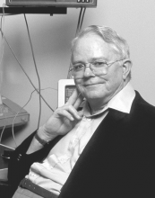

Please note: the AAS Obituaries are temporarily being hosted on this website while their full content is being ingested into the PubPub publishing platform newly adopted by the Bulletin of the American Astronomical Society. When the migration is complete, your existing links will take you to the final, migrated content. Contact peter.williams@aas.org with any questions.
Charles Bruce Stephenson (1929-2001)
Charles Bruce Stephenson, the Worcester R. and Cornelia B. Warner Professor Emeritus of Astronomy at Case Western Reserve University, died in his sleep at home on the morning of 3 December 2001, at the age of 72. The only son of Chauncy Elvira and Ona née Richards Stephenson, Bruce was born in Little Rock, Arkansas on 9 February 1929. Raised on a farm in Illinois, Chauncy served in the U. S. Army A.E.F. Ordnance in WWI, studied fire prevention at the Armour Institute (now Illinois Institute of Technology) and worked in the Fire Prevention Bureau of the State of Arkansas until his retirement. Ona was raised on a farm in Arkansas, and for many years worked as a secretary for an insurance company.
From an early age, Bruce was a gifted student and independent thinker. He received the Bausch & Lomb Science Award in high school. He made his own telescope, and was an active avocational observer throughout his life. The first entry in his personal observing log was dated October 1943, the last, November 2001. Bruce served as Mercury Recorder for the Association of Lunar and Planetary Observers during the years 1949 and 1950. After attending Little Rock Junior College, he transferred to the University of Chicago, where he earned a BS (Mathematics) and an MS (Astronomy) in 1949 and 1951 respectively. His master's thesis on the light curve and color of Vesta was supervised by Gerard P. Kuiper. From 1951 to 1953 Bruce worked for Kaj Aa. Strand as a Research Assistant in Astronomy at the Dearborn Observatory of Northwestern University. He then served in the U. S. Army Map Service Lunar Occultation Program under the direction of John O'Keefe from 1953 to 1955. Following his discharge, Bruce continued his graduate studies at the University of California, Berkeley, where he was a Teaching Assistant 1956-57, a Lick Observatory Fellow 1957-58, and earned a PhD in 1958. By 1958, he had five publications (3 joint) to his credit. His dissertation, "A Study of Visual Binaries Having Primaries Above the Main Sequence," was directed by W. P. Bidelman, and foreshadowed his life's work: the application of spectral classification to the study of stellar evolution, galactic structure, and other astrophysical topics. Bruce was awarded the Astronomical Society of the Pacific’s Dorothea Klumpke Roberts Prize in Astronomy in 1956.
Bruce then joined the Warner & Swasey Observatory of Case Institute of Technology (now Case Western Reserve University) in Cleveland, Ohio. He served as Instructor (1958-59), Assistant Professor (1959-64), Associate Professor (1964-68), and Professor (1968-94). In recognition of his many contributions to the Department of Astronomy and the University, Bruce was appointed the Worcester R. and Cornelia B. Warner Professor of Astronomy in 1988. Upon his retirement in 1994, he was named Worcester R. and Cornelia B. Warner Professor Emeritus of Astronomy.
Over the years, Bruce taught an amazing range of courses at both the undergraduate and graduate level, more than any other member of the department: introductory astronomy (both for astronomy majors and for liberal arts students), practical astronomy (his favorite), radio astronomy, astronomical spectroscopy, stellar atmospheres, stellar interiors, galactic structure, astronomical optics, senior seminar, and senior thesis. His lectures were highly organized and clearly presented. Bruce was a demanding teacher, and most students respected and admired his high standards. The large number of successful undergraduate astronomy students that came from Case over the decades of his presence owed much of their background to Bruce's classes. He supervised eleven PhD students, eight of whom stayed in astronomy.
In addition to teaching, Bruce served the department and the university by willingly and faithfully participating in all the academic "housekeeping" chores. Until his retirement, most of the departmental software was written by him. When the Warner & Swasey Observatory operated two telescopes in northeastern Ohio, the Burrell Schmidt (relocated to Kitt Peak in 1979) and the 36-inch reflector, Bruce contributed to the maintenance, scheduling, and instrumentation of both. The additional funds provided to him by the Worcester R. and Cornelia B. Warner Endowed Chair were invariably dedicated to the needs of the department, at one point even being used to cover our resident observer's salary when grant monies were no longer available. In all his actions and decisions the only criteria were what was best for astronomy and the department. He was a virtually selfless and ideal colleague.
During his career, Bruce's name appeared on over 120 scientific papers, the majority published in refereed journals. Most of these contributions were based on spectroscopic observations made with the Burrell Schmidt or its twin, the Curtis Schmidt, and the 36-inch reflector of the Warner & Swasey Observatory. When he came to Cleveland in 1958, Bruce collaborated with J. J. Nassau on the Luminous Stars in the Northern Milky Way Survey, a joint project with the Hamburg Observatory. Although he was the junior partner, Bruce's insistence on careful calibration of the standards was a crucial contribution to the success of this program, and an early indication of the meticulous approach which characterized all of his work. Later, when the Curtis Schmidt telescope of the University of Michigan was relocated to the Cerro Tololo Inter-American Observatory, he worked with Nick Sanduleak on the survey of Luminous Stars in the Southern Milky Way. Bruce is probably best known for "A General Catalog of Cool Galactic Carbon Stars" (published in 1973, second edition published in 1989), "A General Catalog of Galactic S Stars" (first published in 1976, second edition published in 1984), and the finding list of Hydrogen alpha emission stars in the Milky Way that included the famous object SS 433 (published with N. Sanduleak in 1977). Together with Hugh M. Johnson, a friend from student days at Chicago, Bruce made the first optical identification of an X-Ray source (Sco X-l) in 1966, nearly at the same time that another group made the same identification. For extraneous reasons, the other group received most of the credit for this important independent and virtually simultaneous discovery.
At home, Bruce enjoyed observing with small telescopes from his backyard, reading science fiction and history, and writing poetry. The following sample reflects both his secular humanism and his passion for astronomy:
Dark is the grave that waits for me
But I know darker far.
It waits for those who never asked
The nature of a star.
Bruce is survived by his wife, Elizabeth née Strong, whom he met at Northwestern University, where she was a student majoring in Astronomy. They married in 1952. For many years Elizabeth served as the librarian of the Warner & Swasey Observatory.
Obituary written by: Peter Pesch (Case Western Reserve University)
BAAS Citation: BAAS, 2002, 34, 1384
SAO/NASA ADS Bibcode: 2002BAAS...34.1384P